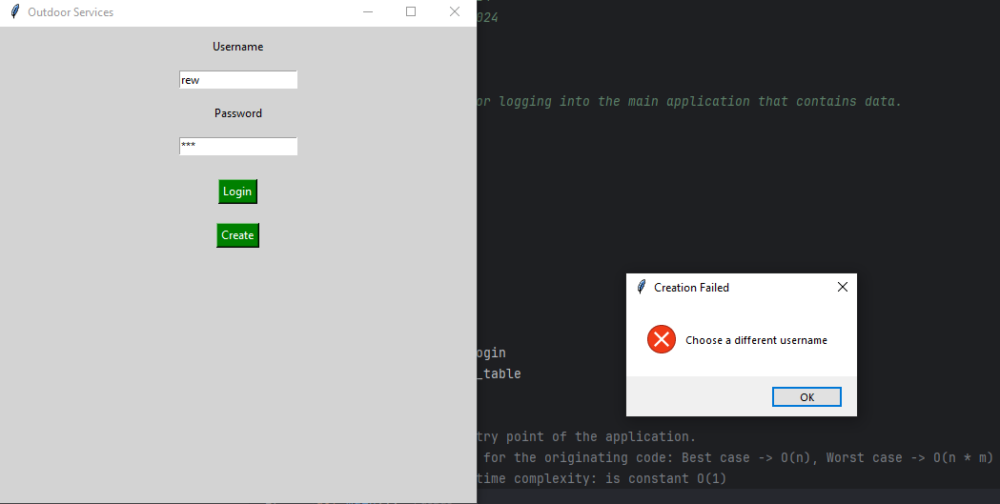

For this third enhancement, I further enhanced the login screen for the Python application. The original binary was converted into a C++ console application designed based on the inferences of the assembly code of the binary executable. It would simply verify user access permissions, and display information. The new artifact was created on September 27th, 2024, where I was able to enhance it into a fully functional login window after porting the application into Python.
I initially chose this artifact to reflect on security since the original executable had many vulnerabilities. After working on the enhancement of this one artifact I see now that it provides a lot of opportunity to showcase what I learned in Computer Science. The UI of the application demonstrates how I can design an application with the user in mind. The simple straightforward appearance showcases my ability to demonstrate well-founded and innovative techniques, skills, and tools in computing practices to implement computer solutions that deliver value and accomplish industry-specific goals.
I improved docstrings to explain each file thoroughly so that any other developer would have an easier time tracking each component of the application’s files. Once documentation was completed I implemented a database, and hashing so that user credentials are securely stored in a database. I ensured that the username could not be duplicated and that all passwords were encoded, hashed, and salted before storing them in the database. No passwords are stored in memory to maintain a security mindset that anticipates adversarial exploits in software architecture and design to expose potential vulnerabilities, mitigate design flaws, and ensure privacy and enhanced security of data and resources.
I met more outcomes in this enhancement than I anticipated. My enhancement for the database category included using SQLite3 to create a user database for storing user credentials, hashing passwords, parameterizing database queries to prevent SQL injections, and improving docstrings and in-code documentation. These enhancements met the three-course outcomes that I previously stated. My current plan is to keep polishing documentation, and functionality, and deliver this project in an organized and timely manner.

As I completed and improved the artifact I learned about the importance of accurately abstracting functionality, and how to ensure sensitive data is secured throughout the code-base. First I implemented the hashing function and tested it to ensure I knew how to encode and decode without storing the plain-text password in memory. The biggest challenge I faced was implementing this hashing embedded into the logic of the login screen. I found that having functions with similar names made it extremely confusing especially when I would nest a function within another. One example would be when I embedded the hashing function into the verify function, I unintentionally encoded the password twice when verifying the credentials with what was in the database.
Abstracting functionality is great, and Pythons’ simple syntax makes working with it extremely pleasing. There is a limit to the simplistic syntax once you do it too much. To prevent having to change multiple calls throughout my code I eventually renamed the function and refactored it to fit the logic I was aiming for.